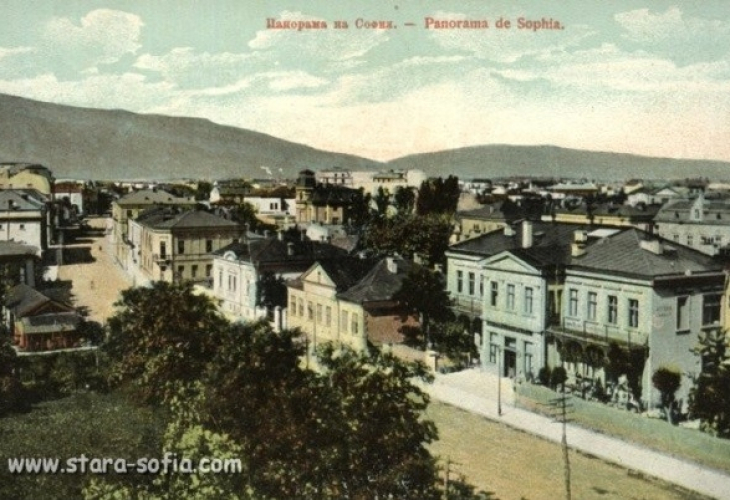
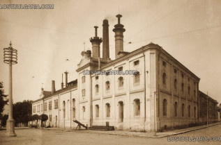
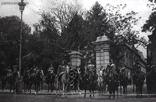

Тази година може да започнете отбелязването на Трифон Зарезан от центъра на столицата с едно любопитно събитие, наречено Софийски квартален Tour de Зарезан.
Впуснете се на винена обиколка с четири спирки в София, където ще можете да се срещнете с представители на 16 български изби, да поговорите с тях, да опитате вината им.
А ако съберете печати от четирите места - домакини на събитието, ще можете да участвате в томбола със страхотни награди (получаването на печат не е обвързано с покупка,
а само с посещение на обекта).
Целта на събитието е да ни напомни, че качественото българско вино е на една ръка разстояние и е плод на много труд и любов.
Организатор на събитието е Българската асоциация на независимите лозаро-винари, млада организация с нестопанска цел,
обединяваща предимно семейни лозаро-винари от различни райони на България, които правят всичко от А до Я: грижат се за лозето,
берат гроздето, произвеждат виното и продават бутилките под собствено име/марка.
Следвайте и споделяйте събитието с хаштаг #tourdezarezan.
Спирки на Софийския квартален Tour de Зарезан
Летенето е едно от най-великите постижения на човечеството, както и едно от най-изнервящите неща, които могат да ти се случат,
особено ако прекараш 3 часа удобно седнал на седалката си в самолета, а той не излита и не излита.
Полетите постоянно закъсняват, променят часа си или биват направо отменяни, което може да е от леко изнервящо до непоносимо вбесяващо
(например, ако изпуснеш връзката си за следващия полет).
Оказва се, че има начини, по които да намалиш до минимум възможността полетът ти да закъснее. Ето какво казват последните проучвания по темата.
Има твърде много външни обстоятелства, заради които полетите закъсняват – лошо време, въздушният трафик, поддръжка, смяна на екипажа, птици в двигателя и т.н.
Обикновено всичко стартира нормално и с напредването на деня закъсненията се натрупват все повече и повече като в домино всеки закъснял полет причинява закъснение на следващия и т.н.
Според скорошно проучване на най-големите американски летища, системата изглежда успява да се рестартира през нощта. Полетите, които имат най-голям шанс да излетят и кацнат по разписание,
са тези, които излизат между 6 и 10 часа сутринта. Около 18 часа пък е пикът на закъсненията, като средното забавяне достига до 20 минути.
Според анализ на изданието Business Insider 30% от петъчните полети не могат да излетят навреме, като по този превръщат този ден от седмицата в най-лошия избор за летене.
Съботата, от друга страна, се оказва доста по-добър избор.
Още едно златно правило, което ще улесни живота ти, ако полетът ти все пак закъснее, а пътуването ти е с прекачване. За да не изпуснеш следващия си полет, оставяй поне три часа между двата (време за смяна на терминала, за компенсиране на закъснение, чакане на опашки и т.н.). По-добре да имаш малко време между полетите за книжка и капучино, вместо да изпуснеш полета си и да съсипеш цялото си пътуване.
Пет красиви сгради и монументи, които днес няма как да видим в пълния им блясък
Градовете приличат на хората – те растат, стареят и често губят някогашната си красота. Въпреки хубавото си мото „Расте, но не старее”, София не е изключение. В бурните десетилетия след Освобождението, а също така и покрай Първата и Втората световна война, българската столица се променя значително – тя се сдобива с подчертано европейски дух… който започва да губи стъпка по стъпка след 1945, а дори още по-силно – след 1989, пише Вести бг. Ето пет красиви сгради и монументи, които днес няма как да видим в пълния им блясък:
1. Прошековата фабрика
Наричана официално „пивоварна Братя Прошекови”, това била не само първата пивоварна в България, но и една от най-емблематичните сгради в центъра на София. Фабриката е и само част от приноса на чешките братя за развитието на града – с техните имена са свързани както идейно, така и чисто финансово Орлов мост, Лъвов мост и паметника на Апостола на свободата Васил Левски. Уви, днес пивоварната вече не съществува, а на нейно място на улица "Сан Стефано" е издигната модерна, но съмнителна като естетика сграда.
2. Фениксът на София
Той бил кацнал, разперил гордо криле, на най-правилното възможно място – сградата на застрахователна компания Български Феникс, издигната по проект на фамозните Георги Апостолов, Георги Фингов и Димо Ничев. Днес сградата продължава да си е на мястото (залепена за Министерски съвет), но митичната птица е изчезнала.
3. Царският дворец
Някогашният османски конак, а по-късно обител на българските монарси, днес все още съществува. Но, уви, в осакатен вид, лишаващ го до голяма степен от някогашната красота и внушителност. Комунистическият режим премахва цялата ограда, както и множество от пищните декорации вътре в сградата.
4. Църквата "Св. Спас"
Една от най-високите и красиви църкви в София някога се е издигала на мястото на днешната централа на Булбанк. Храмът е строен още през 13-14 век, значително разширен през 1881 и… частично разрушен при съюзническите бомбардировки на града през 1944. В началото на 80-те съдбата му е решена и е съборен изцяло.
5. Паметникът на загиналите от Първи и Шести пехотен полк
Откритият през 1934 монумент в прослава на загиналите по време на Балканската война войници от Първи и Шести пехотен полк бил разположен до (на практика опрян в) казармени помещения, намиращи се на мястото на изградения по-късно монумент "1300 години България". Частично унищожен от бомбардировките, а по-късно напълно премахнат при строежа на НДК, днес паметникът не може да бъде видян, но е прието решение за неговото възстановяване. Дано се случи.От днес потребителите на „Вайбър” ще научават за туристическите забележителности на България през специално приложение. Достъпът до информацията за стотиците родни забележителности става чрез „Вайбър чат екстеншън”. Засега услугата е достъпна за всички потребители на платформата с български номера, но ще се развива. По последни данни 900 млн. души ползват „Вайбър”, а 37% от потребителите на различни мобилни устройства резервират почивките си онлайн. „Чат екстеншън само до момента е използван над 1 млрд. пъти в глобален мащаб”, обясни Атанас Райков, генерален директор на „Вайбър” за Централна и Източна Европа. „До 4-5 месеца ще работи на всички 13 езика, които имаме на приложението „Аз обичам България” и ще бъде достъпно до всяка една точка на света”, посочи министърът на туризма Николина Ангелкова.